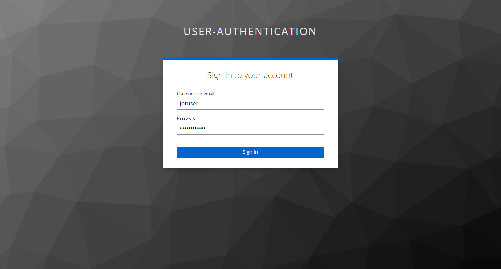

Toolbox Usage
Landing in the Toolbox
The user can use the landing page of the toolbox to view an overview of the available tools.

As for most tools Keycloak has been integrated, user should login with appropriate credentials in order to access tools such as DEF-PIPE and SIM-PIPE.
